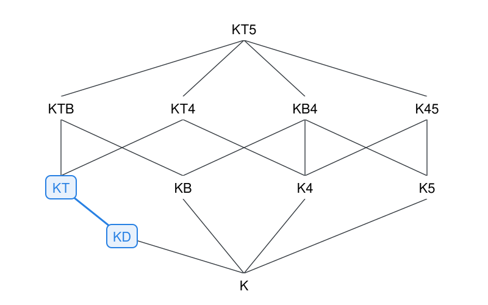
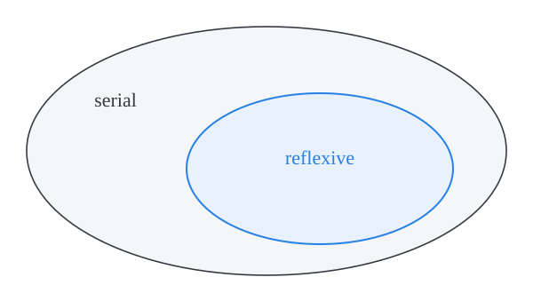
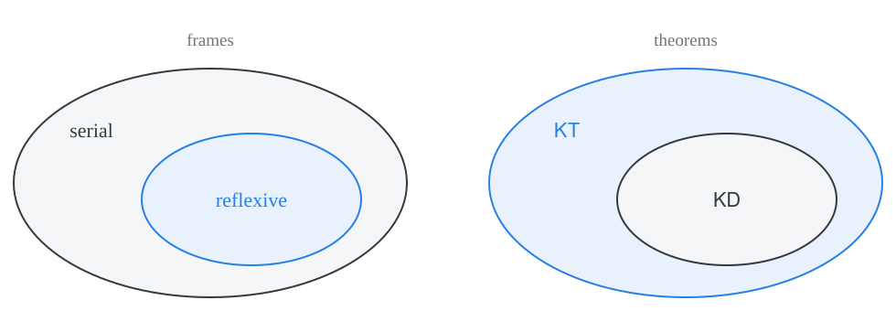
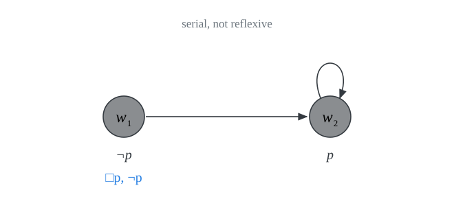
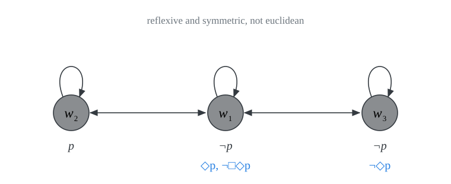
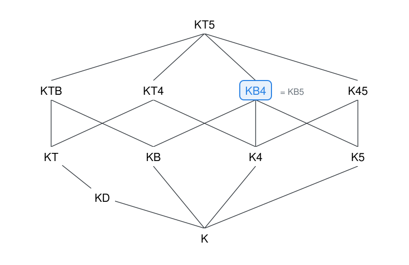
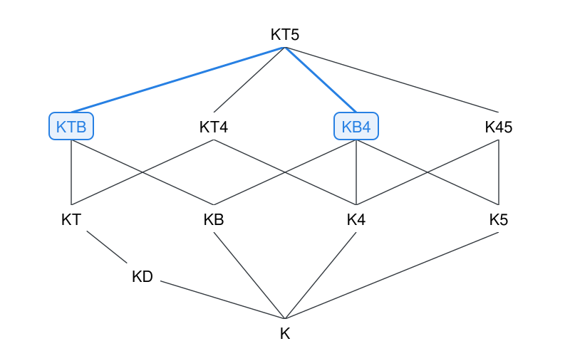

normal modal logics
PHIL 452 · Modal Logic
normal modal logics
We now look at axiom systems that extend the minimal normal modal logic \(\textsf{K}\) with all substitution instances of several further modal axioms.
normal modal logics
A normal modal logic \(\Sigma\) is an axiom system that results from \(\textsf{K}\) when we add to its axioms all substitution instances of further modal axioms.
We keep the same rules of inference: \(\textsf{MP}\) and \(\textsf{RN}\).
Derived rules of inference such as \(\textsf{PL}\), \(\textsf{RK}\), and \(\textsf{RK}_\Diamond\) remain available for each normal logic.
We use the name of the added axioms to name each extension of \(\textsf{K}\): \(\textsf{KT}\), \(\textsf{KB}\), \(\textsf{K4}\), \(\textsf{KB4}\), \(\dots\)
three important normal systems
\(\textsf{KT}\) extends \(\textsf{K}\) with \(\Box p \to p \tag{\textsf{T}}\)
\(\textsf{KT4}\) extends \(\textsf{KT}\) with \(\Box p \to \Box \Box p\)
\(\textsf{KT5}\) extends \(\textsf{KT}\) with \(\Diamond p \to \Box \Diamond p\)
\[ \begin{array}{llc} \textsf{T} & \Box p \to p & \quad \\ \textsf{B} & p \to \Box \Diamond p \\ \textsf{4} & \Box p \to \Box \Box p \\ \textsf{5} & \Diamond p \to \Box \Diamond p\\ \textsf{D} & \Box p \to \Diamond p & & & \\ \end{array} \]
We write \(\vdash_{\textsf{KT}} \varphi\), \(\vdash_{\textsf{KT4}} \varphi\), \(\vdash_{\textsf{KT5}} \varphi\). Two notable systems are \(\textsf{S4} = \textsf{KT4}\) and \(\textsf{S5} = \textsf{KT5}\).
axioms and their duals
Each axiom is interderivable with its modal dual:
\[ \begin{array}{llcll} \textsf{T} & \Box p \to p & \quad & p \to \Diamond p & \textsf{T}_\Diamond\\ \textsf{B} & p \to \Box \Diamond p & & \Diamond \Box p \to p & \textsf{B}_\Diamond\\ \textsf{4} & \Box p \to \Box \Box p & & \Diamond \Diamond p \to \Diamond p & \textsf{4}_\Diamond\\ \textsf{5} & \Diamond p \to \Box \Diamond p & & \Diamond \Box p \to \Box p & \textsf{5}_\Diamond\\ \textsf{D} & \Box p \to \Diamond p & & & \\ \end{array} \]
The recipe for the proof is to substitute \(\neg p\) for \(p\), contrapose, and apply \(\textsf{Def} \ \Diamond\).
When we do this for \(\textsf{D}\), we obtain \(\textsf{D}\) back:
\[ \begin{array}{lclcl} \Box \neg p \to \Diamond \neg p & \Leftrightarrow & \neg \Diamond \neg p \to \neg \Box \neg p & \Leftrightarrow & \Box p \to \Diamond p \\ \end{array} \]
\(\textsf{KT} \vdash \textsf{T}_\Diamond\)
\(\vdash_{\textsf{KT}} p \to \Diamond p\)
Proof. We apply the recipe. Substitute \(\neg p\) for \(p\), contrapose, and apply \(\textsf{Def} \ \Diamond\). \[ \begin{array}{lllll} 1 & & \Box \neg p \to \neg p & \textsf{T}[\neg p/p]\\ 2 & & \neg \neg p \to \neg \Box \neg p & \textsf{PL} \ 1\\ 3 & & \neg \neg p \to \Diamond p & \textsf{Def} \ \Diamond \ 2 \\ 4 & & p \to \Diamond p & \textsf{PL} \ 3 \\ \end{array} \]
\(\textsf{KT}_\Diamond \vdash \textsf{T}\)
\(\vdash_{\textsf{KT}_\Diamond} \Box p \to p\)
Proof. We now retrace our steps. \[ \begin{array}{lllll} 1 & & \neg p \to \Diamond \neg p & \textsf{T}_\Diamond[\neg p/p]\\ 2 & & \neg p \to \neg \Box \neg \neg p & \textsf{Def} \ \Diamond \ 1 \\ 3 & & \Box \neg \neg p \to p & \textsf{PL} \ 2 \\ 4 & & p \to \neg \neg p & \textsf{PL} \\ 5 & & \Box p \to \Box \neg \neg p & \textsf{RK} \ 4 \\ 6 & & \Box p \to p & \textsf{PL} \ 3, 5 \\ \end{array} \]
Note the role of \(\textsf{RK}\) in line 5: we cannot just cancel \(\neg\neg\) inside the scope of \(\Box\) by \(\textsf{PL}\).
the landscape of normal modal logics
We are now in a positiont to compare different normal modal systems.
extension
A normal modal system \(\Sigma\) extends another system \(\Delta\), written \(\Delta \sqsubseteq \Sigma\), iff every theorem of \(\Delta\) is a theorem of \(\Sigma\). That is, for each \(\varphi\) of \(\mathcal{L}^\Box\), \[\text{if} \ \vdash_\Delta \varphi \ \text{then} \ \vdash_\Sigma \varphi.\]
\(\Sigma\) is a proper extension of \(\Delta\), written \(\Delta \sqsubset \Sigma\), iff \(\Delta \sqsubseteq \Sigma\) but \(\Sigma \not\sqsubseteq \Delta\).
Two systems are the same when each extends the other: \(\Delta \sqsubseteq \Sigma\) and \(\Sigma \sqsubseteq \Delta\).
eleven normal modal systems
How to read the diagram:
If \(\Sigma\) is above \(\Delta\) and joined to it by an edge, then \(\Delta \sqsubset \Sigma\).
Two questions for each edge:
- why does the system above extend the system below?
- why is the extension proper?

the semantic counterpart

Each normal modal system will turn out to be sound and complete with respect to the corresponding class of frames.
how to show that \(\Delta \sqsubseteq \Sigma\)
\(\Sigma\) proves the axioms of \(\Delta\)
\(\Delta \sqsubseteq \Sigma\) iff \(\Sigma\) proves each axiom of \(\Delta\).
Proof. \(\Delta\) and \(\Sigma\) share the basic rules of inference \(\textsf{MP}\) and \(\textsf{RN}\). So if each axiom of \(\Delta\) is a theorem of \(\Sigma\), each line of a proof in \(\Delta\) is a theorem of \(\Sigma\).
Since normal modal systems share the axioms of \(\textsf{K}\), in practice, we need only look at the relevant additions to \(\textsf{K}\). For example, to prove that \(\textsf{KD} \sqsubseteq \textsf{KT}\), we need only check that every instance of \(\textsf{D}\) is a theorem of \(\textsf{KT}\).
\(\textsf{KD} \sqsubseteq \textsf{KT}\)
\(\vdash_{\textsf{KT}} \Box \varphi \to \Diamond \varphi\)
Proof. We combine \(\textsf{T}\) and its dual \(\textsf{T}_\Diamond\): \[ \begin{array}{lllll} 1 & & \Box \varphi \to \varphi & \textsf{T}[\varphi/p] \\ 2 & & \varphi \to \Diamond \varphi & \textsf{T}_\Diamond[\varphi/p]\\ 3 & & \Box \varphi \to \Diamond \varphi & \textsf{PL} \ 1, 2\\ \end{array} \]

a semantic route
A normal modal system \(\Sigma\) is sound with respect to a class of frames \(\mathcal{C}\) iff for every \(\varphi\), \(\vdash_\Sigma \varphi\) only if \(\models_{\mathcal{C}} \varphi\).
A normal modal system \(\Sigma\) is complete with respect to a class of frames \(\mathcal{C}\) iff for every \(\varphi\), \(\vdash_\Sigma \varphi\) only if \(\models_{\mathcal{C}} \varphi\).
\(\textsf{KD}\) is sound and complete with respect to serial frames.
\(\textsf{KT}\) is sound and complete with respect to reflexive frames.
Each theorem of \(\textsf{KD}\) is valid in all serial frames. (Soundness for \(\textsf{KD}\))
Every reflexive frame is serial.
Each theorem of \(\textsf{KD}\) is valid in all reflexive frames.
Each theorem of \(\textsf{KD}\) is a theorem of \(\textsf{KT}\). (Completeness for \(\textsf{KT}\))

the reversal

The fewer the frames, the more valid formulas. That is why the class of reflexive frames gives rise to more valid formulas than the class of serial frames.
\(\textsf{KD} \sqsubseteq \textsf{KT}\) mirrors the fact that \(\text{reflexive} \subseteq \text{serial}\).
how to show that \(\Delta \not\sqsubseteq \Sigma\)
find a countermodel
Suppose each theorem of \(\Sigma\) is valid in every frame in \(\mathcal{C}\). Then \(\Delta \not\sqsubseteq \Sigma\) if some axiom of \(\Delta\) is not true in some model based on some frame in \(\mathcal{C}\).
Proof. If some axiom \(\varphi\) of \(\Delta\) is not true in some model based on some frame in \(\mathcal{C}\), then \(\varphi\) is not valid in every frame in \(\mathcal{C}\). It follows that \(\varphi\) is not a theorem of \(\Sigma\). So, not every theorem of \(\Delta\) is a theorem of \(\Sigma\).
The recipe: find a model based on some frame in \(\mathcal{C}\) in which some axiom of \(\Delta\) fails.
\(\textsf{KT} \not\sqsubseteq \textsf{KD}\)
\(\textsf{KD}\) is sound with respect to the class of serial frames: each theorem of \(\textsf{KD}\) is valid in all serial frames. \(\textsf{T}\) is not true in models based on some serial frame:

\(w_1 \Vdash \Box p\) because \(w_2\) is the only world accessible from \(w_1\) and \(w_2\) is a \(p\)-world in the model. Yet, \(w_1\) is not a \(p\)-world. Thus \((W, R, V), w_1 \nVdash \Box p \to p\).
Hence \(\textsf{KD} \not \sqsubseteq \textsf{KT}\).
\(\textsf{KB5} \not\sqsubseteq \textsf{KTB}\)
\(\textsf{KTB}\) is sound with respect to the class of reflexive and symmetric frames: each theorem of \(\textsf{KTB}\) is valid in all reflexive and symmetric frames. Yet, \(\textsf{5}\) is not true in some models based on a reflexive and symmetric frame:

\(w_1 \Vdash \Diamond p\), since \(w_2\) is a \(p\)-world accessible from \(w_1\).
Since \(w_3 \nVdash \Diamond p\), and \(w_3\) is accessible from \(w_1\), \(w_1 \nVdash \Box \Diamond p\).
\((W, R, V), w_1 \nVdash \Diamond p \to \Box \Diamond p\).
where is \(\textsf{KB5}\)?
What exactly is the place of \(\textsf{KB5}\) in the landscape of normal modal systems?
- \(\textsf{KB5}\) extends \(\textsf{KB}\)
- \(\textsf{KB5}\) extends \(\textsf{K5}\)
\(\textsf{KB4} \sqsubseteq \textsf{KB5}\)
\(\vdash_{\textsf{KB5}} \Box \varphi \to \Box \Box \varphi\)
Proof. We use \(\textsf{B}\) to move from \(\Box \varphi\) to \(\Box \Diamond \Box \varphi\), and we use \(\textsf{RK}\) to rewrite under \(\Box\). \[ \begin{array}{lllll} 1 & & \Box \varphi \to \Box \Diamond \Box \varphi & \textsf{B}[\Box \varphi/p]\\ 2 & & \Diamond \Box \varphi \to \Box \varphi & \textsf{5}_\Diamond [\varphi/p]\\ 3 & & \Box \Diamond \Box \varphi \to \Box \Box \varphi & \textsf{RK} \ 2 \\ 4 & & \Box \varphi \to \Box \Box \varphi & \textsf{PL} \ 1, 3\\ \end{array} \]
\(\textsf{KB5} \sqsubseteq \textsf{KB4}\)
\(\vdash_{\textsf{KB4}} \Diamond \varphi \to \Box \Diamond \varphi\)
Proof. We use a similar pattern with \(\textsf{4}_\Diamond\) in place of \(\textsf{5}_\Diamond\). \[ \begin{array}{lllll} 1 & & \Diamond \varphi \to \Box \Diamond \Diamond \varphi & \textsf{B}[\Diamond \varphi/p]\\ 2 & & \Diamond \Diamond \varphi \to \Diamond \varphi & \textsf{4}_\Diamond[\varphi/p] \\ 3 & & \Box \Diamond \Diamond \varphi \to \Box \Diamond \varphi & \textsf{RK} \ 2\\ 4 & & \Diamond \varphi \to \Box \Diamond \varphi & \textsf{PL} \ 1, 3\\ \end{array} \]
\(\textsf{KB4} = \textsf{KB5}\)
Each system extends the other, which means that they share the same theorems.
\(\textsf{KB4}\) sits above \(\textsf{K5}\): \(\textsf{5}\) is a theorem of \(\textsf{KB4}\).
From a semantic point of view, a symmetric frame is transitive iff it is euclidean.

incomparable systems
\(\textsf{KB5} \not\sqsubseteq \textsf{KTB}\): \(\textsf{5}\) fails in models based on reflexive and symmetric frames.
\(\textsf{KB4} \not\sqsubseteq \textsf{KTB}\), as \(\textsf{KB4} = \textsf{KB5}\).
Is \(\textsf{KTB} \sqsubseteq \textsf{KB4}\)? No, \(\textsf{T}\) fails in models based on symmetric and transitive frames.
Hint: consider a model with a dead end.
